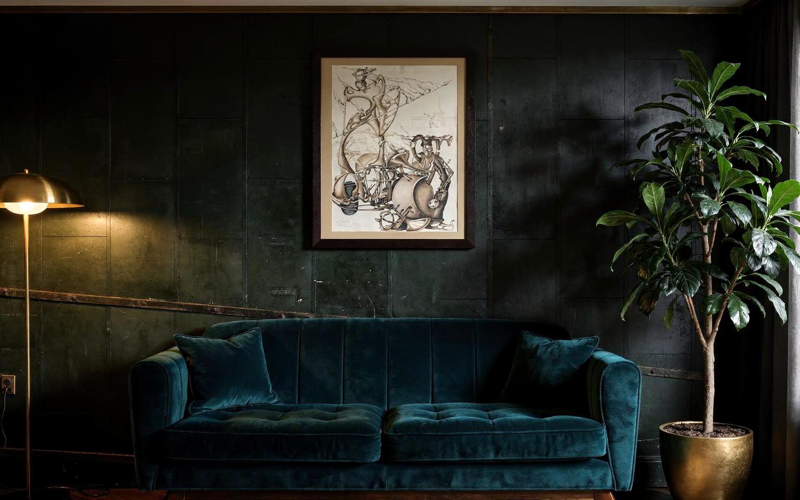

Vitalie Grișciuc: Surreal Composition with Musical Instruments
Art & Illustration
← Back to collectionA signed graphic composition dated 1998, transforming musical instruments into dreamlike figures.
Signed Vitalie Grișciuc and dated 1998, this monochrome composition interweaves the forms of string and wind instruments with surreal, human-like figures. Fine lines, dense shading and the paper’s natural signs of age give the work a sense of movement and timelessness. Its beige mount and dark wooden frame gather the drawing’s graphic rhythm within a calm architectural boundary.